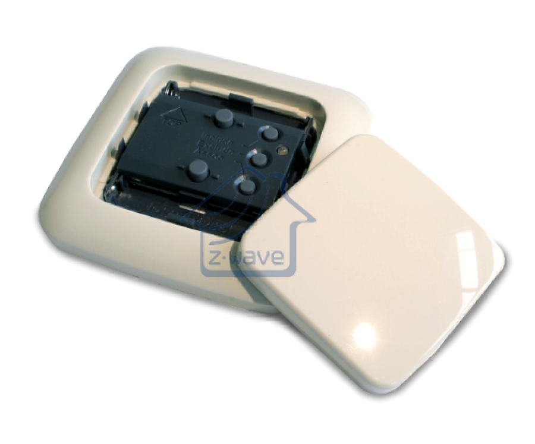

ZME_05460
Firmware Version : 1.1 |
 |
KurzinfoR Dieses Gerät ist ein mobiler Z-Wave-Controller. Zum Inkludieren des Wandcontroller in ein anderes Netz 2 Sekunden "Include"- Taste drücken (grüne LED blinkt). Soll der Wandtaster selbst Primärcontroller sein, wird mit einem Dreifachklick der "Include"-Taste den Inklusionprozess startet. Nach Inklusion sendet ein Dreifachklick auf die obere oder untere Schaltfläche einen Node Information Frame und weckt den Wandcontroller für 2 Sekunden auf. Weitergehende Informationen finden sich in den jeweiligen Abschnitten dieses Handbuches. |
Produktbeschreibung
Der Z-Wave.Me Funk-Wandcontroller ist ein Z-Wave Controller, mit dem andere Z-Wave Geräte per Funk gesteuert werden können. Das Gerät ist batteriebetrieben und kann damit an jeder flachen und trockenen Stelle angebracht werden. Als Controller kann das Gerät andere Z-Wave Geräte inkludieren, selbst als Zweitcontroller in andere Netze inkludiert werden und Aktoren steuern. Eine Aktivierung von verschiedenen Szenen in einem im Funknetz befindlichen IP-Gateway ist ebenfalls möglich. Das Produkt wird komplett mit Steuerelektronik, Schaltwippe und Montagerahmen für die Schalterserie Busch-Jaeger DURO 2000 SI in der Farbe creme-weiß geliefert.
Installationsanleitung
Das Gerät kann auf jeder flachen, trockenen und sauberen Fläche mittels Schrauben oder zweiseitigem Klebeband. Um die Netzmanagementtasten benutzen zu können muss die Schaltwippe entfernt werden. Dazu wird die Wippe mittels eines flachen Schraubendrehers einfach ausgehebelt. Beim Einsetzen der Batterien (2 x LR8D425) ist auf die Polung (+), (-) zu achten.
Achtung: Die elektronische Schaltung kann zerstört werden, wenn die Batterien falsch herum eingesetzt werden.
Verhalten des Gerätes im Z-Wave Netz
I Im Auslieferungszustand ist das Gerät mit keinem Z-Wave-Netz verbunden. Damit es mit anderen Z-Wave Geräten kommunizieren kann, muss es in ein bestehendes Z-Wave Netz eingebunden werden. Dieser Prozess wird bei Z-Wave Inklusion genannt. Geräte können Netzwerke auch wieder verlassen. Dieser Prozess heißt bei Z-Wave Exklusion. Beide Prozesse werden von einem Controller gestartet, der dazu in einen Inklusion- bzw. Exklusion-Modus geschaltet werden muss. Das Handbuch des Controllers enthält Informationen, wie er in diese Modi zu schalten ist. Erst wenn der Controller des Z-Wave Netzes im Inclusion-Modus ist, können Geräte hinzugefügt werden. Das Verlassen des Netzes durch Exklusion führt zum Rücksetzen dieses Gerätes in den Auslieferungszustand.
Sobald sich der Primärcontroller im Inklusionmodus befindet, wird zur Inclusion in das Netz des Primärcontrollers 2 Sekunden die "Include" Taste gedrückt. Eine blinkende grüne LED bestätigt, wenn diese Operation erfolgreich war.
Bedienung des Gerätes
Der Wandtaster steuert andere Geräte mit der Schaltwippe (Kommunikationsmuster 6 oder 7). Der obere Teil der Schaltwippe sendet ein "EIN"-Kommando, der untere Teil der Wippe sendet ein "AUS" Kommando and alle Geräte, die in der Assoziationsgruppe des Gerätes programmiert sind. Abhängig von der Konfiguration des Konfigurationsparameters 14 kann auch ein Doppelklick der Schaltwippe zur Steuerung einer zweiten Gruppe von Geräten genutzt werden. Der Wandtaster kann weiterhin verschiedene Kommandos zum Steuern von Szenen senden. Die Konfigurationsparameter 13 und 14 müssen dazu entsprechend gesetzt werden. Die folgenden Steuernummern sind definiert:
- Szene 1: Einfachklick des oberen Teiles der Schaltwippe
- Szene 2: Einfachklick des unteren Teiles der Schaltwippe
- Szene 3: Einfachklick Hochdimmen
- Szene 4: Einfachklick Herunterdimmen
- Szene 5: Einfachklick Stop Hochdimmen
- Szene 6: Einfachklick Stop Herunterdimmen
- Szene 11: Doppelklick des oberen Teiles der Schaltwippe
- Szene 12: Doppelklick des unteren Teiles der Schaltwippe
- Szene 13: Doppelklick Hochdimmen
- Szene 14: Doppelklick Herunterdimmen
- Szene 15: Doppelklick Stop Hochdimmen
- Szene 16: Doppelklick Stop Herunterdimmen
Kinderschutz
Das Gerät verfügt über einen Kinderschutzmechanismus. Dabei wird die lokale Bedienung über Tasten gesperrt und es ist nur noch eine Bedoenung über Funk möglich.
Die Kindersicherung muss über ein Funkkommando aktiviert werden. Es ist allerdings möglich, die Kindersicherung mit einem Dreifachklick auf die Schaltfläche für 5 Sekunden zu deaktivieren.
Kommunikation mit einem batteriebetriebenen Gerät
W Das Gerät ist batteriegespeist und damit in der Regel in einem Tiefschlafmodus um Strom zu sparen. Im Tiefschlafmodus kann das Gerät keine Funksignale empfangen. Daher wird ein (statischer) Controller benötigt, der netzgespeist und damit immer funkaktiv ist. Dieser Controller - zum Beispiel ein IP-Gateway - verwaltet eine Nachrichten-Mailbox für dieses batteriegespeiste Gerät, in dem Nachrichten an dieses Gerät zwischengespeichert werden. Ohne einen solchen statischen Controller wird die Nutzung dieses batteriebetriebenen Gerätes sehr schnell zur Entladung der Batterie führen oder die Nutzung ist komplett unmöglich.
Dieses Gerät weckt regelmäßig auf, meldet dies durch Aussenden einer sogenannten Wakeup-Notifikation und leert dann seine Mailbox im statischen Controller. Dafür muss bei der Inclusion die Node-ID des Controllers und ein Aufweckinterval definiert werden. Erfolgt die Inklusion durch einen statischen Controller wie zum Beispiel ein IP-Gateway, wird dieser Controller diese Konfiguration automatisch erledigen und in der Regel eine Nutzerschnittstelle anbieten, um das Aufweckinterval den Nutzerbedürfnissen anzupassen. Das Aufweckinterval ist ein Kompromiss zwischen maximaler Batterielaufzeit und minimaler Reaktionszeit des batteriegespeisten Gerätes.
Das minimal erlaubte Aufwachinterval beträgt 240 Sekunden aber es ist sehr empfehlenswert, ein deutlich längeres Interval zu wählen, da der einzige Sinn des Aufweckens im Senden eines Batteriestatusberichtes liegt. Dieser kann nur einmal pro Woche gesendet werden. Wird als Ziel-Gerät die Geräte-ID 0 eingetragen, ist das regelmäßige Aufwecken des Gerätes komplett unterdrückt. Im Auslieferungszustand ist als Geräte-ID die 0 eingetragen. und damit das regelmäßige Auswecken unterdrückt.
Das Gerät wird durch Dreifachklick auf die Schaltwippe aufgeweckt.
Es ist möglich die Gerätenummer 255 als Zielgerät für die Wakeup-Notifikation anzugeben. In diesem Falle wird die Nachricht als Broadcast an alle Geräte mit direkter Funkverbindung gesendet. Dem Vorteil der sofortigen Benachrichtigung steht als Nachteil gegenüber, das das Gerät gegebenenfalls mehr Zeit im aktiven Modus und damit mehr Batterieladekapazität verbraucht.
Node Information Frame
NIF Der Node Information Frame ist die Visitenkarte eines Z-Wave Gerätes. Es ist ein spezielles Datenpaket, in dem der Gerätetyp sowie die Funktionen des Gerätes bekanntgemacht werden. Inklusion und Exklusion eines Gerätes wird von diesem mit einem Node Information Frame beantwortet. Zusätzlich kann der Node Information Frame für bestimmte Konfigurationsprozesse des Z-Wave Netzes - zum Beispiel das Setzen von Assoziationen - benötigt werden.
Ein Dreifachklick auf die Schaltwippe (oben oder unten) sendet einen Node Information Frame aus. Danach bleibt das Gerät für 2 Sekunden wach.
Bedeutung der LED-Signale
- Grün für 2 Sekunden = ok
- Rot für 2 Sekunden = Fehler
- Grün blinkend = Gerät ist bereit und wartet.
- Rot-Geld blinkend für 2 Sekunden = Gerät kann Kommando nicht ausführen
Assoziationen - wie werden andere Geräte gesteuert?
A Z-Wave Geräte können andere Geräte direkt steuern. Diese direkte Steuerung heißt in Z-Wave Assoziation. In den steuernden Geräten muss dazu die Geräte-ID des zu steuernden Gerätes hinterlegt werden. Dies erfolgt in sogenannten Assoziationsgruppen. Eine Assoziationsgruppe ist immer an ein Ereignis im steuernden Gerät gebunden (Tastendruck oder Auslösen eines Sensors). Bei Eintritt dieses Ereignisses wird an alle in einer Assoziationsgruppe hinterlegten Geräte ein Steuerkommando gesendet.
Assoziationsgruppen:
| 1 | Einfachdruck auf die Schaltfläche und Halten der Taste (max. Anzahl Geräte: 10) |
| 2 | Doppeldruck auf die Schaltfläche und Halten der Taste (max. Anzahl Geräte: 10) |
Setzen und Löschen von Assoziationsbeziehungen
SA Assoziationen können entweder per Funkkommando oder direkt am Gerät gesetzt werden.
- Dreifachklick auf die “Association” Taste.
- Dreifachklick auf die “Inclusion” Taste zum Setzen einer Assoziation oder auf “Exclusion” Taste zum Entfernen einer Assoziation.
- Einfach oder Doppelklick auf die Schaltwippe, um die Assoziationsgruppe auszuwählen (Gruppe für Einfach oder Doppelklick)
- Aussenden eines Node Information Frames von dem Gerät, daß einer Assoziationsgruppe hinzugefügt werden soll. Die Information, wie ein Node Information Frame ausgesendet wird, steht im Handbuch des jeweiligen Gerätes.
Spezielle Controllerfunktionen
So lang dieses Gerät nicht als Sekundärcontroller in das Netz eines anderen Z-Wave Controllers inkludiert wurde, kann es selbst als Primärcontroller (Systemverwalter) ein Z-Wave-Netz aufbauen und managen. Dies beinhaltet das Inkludieren und Exkludieren von Geräten, das Erstellen und Löschen von Assoziationen sowie die Reorganisation des Netzes. Die folgenden Funktionen werden von diesem Controller unterstützt:
Inklusion von Geräten in das eigene Z-Wave-Netz
CI Zwei Z-Wave Geräte können nur dann miteinander kommunizieren, wenn sie sich in einem gemeinsamen Netz befinden. Der Vorgang, ein Gerät in ein Z-Wave Netz einzufügen heisst bei Z-Wave Inklusion und wird immer von einem Controller gestartet. Dieser wird dazu in den sogenannten Inklusion-Modus geschaltet. Die Inklusion wird durch das zu inkludierende Gerät bestätigt, meist durch Betätigen einer Taste.
- Dreifachklick auf die “Inclusion” Taste. Die LED beginnt grün zu blinken. Der Controller ist damit im Inklusion-Modus und kann andere Geräte in sein Netz aufnehmen.
- Die Inklusion muss am zu inkludierenden Gerät - meist durch Tastendruck - bestätigt werden. Die entsprechende Information dazu kann dem Handbuch des zu inkludierenden Gerätes entnommen werden.
- Im Erfolgsfall leuchtet die grüne LED drei Sekunden lang. Ein Fehlerfall wird durch eine rote LED angezeigt.
Schlägt die Inklusion fehl, sollte das Gerät durch Exklusion in den Auslieferungszustand zurückversetzt und der Vorgang wiederholt werden.
Exklusion von Geräten aus dem eigenen Z-Wave-Netz
Der Controller kann Geräte aus dem Z-Wave-Netz entfernen. Durch diese Exklusion wird die Verbindung zwischen dem Gerät und dem Controller beendet und es ist keine Kommunikation mehr möglich. Für eine Exklusion wird der Controller in den Exclusion-Modus geschaltet und die Exclusion am Gerät - meist durch einen Tastendruck bestätigt.
Achtung: Das Entfernen eines Gerätes aus einem Netz setzt dieses Gerät wieder in den Auslieferungszustand zurück. Ein Gerät kann von jedem Controller zurückgesetzt (exkludiert) werden, auch wenn es vorher zu einem anderen Netz gehört hat.
- Dreifachklick auf die “Exclusion” Taste. Die LED beginnt grün zu blinken. Der Controller ist damit im Exklusion-Modus.
- Die Exklusion muss am zu inkludierenden Gerät - meist durch Tastendruck - bestätigt werden. Die entsprechende Information dazu kann dem Handbuch des zu exkludierenden Gerätes entnommen werden.
- Im Erfolgsfall leuchtet die grüne LED drei Sekunden lang. Ein Fehlerfall wird durch eine rote LED angezeigt.
Übergabe der Primärcontrollerrolle an einen neuen Controller
Dieses Gerät kann seine Primärcontrollerfunktion an einen anderen in das Netz zu includierenden Controller übergeben.
Die Übergabe der Primärcontrollerrolle wird eingeleitet, indem die "Assoziation"-Taste 6 Sekunden lang gedrückt wird. Die LED blinkt danach gelb. Nun wird die "Inclusion"- Taste für 3 Sekunden gedrückt und die LED blinkt grün. Nun muss der neue Primärcontroller in den Inklusion-Modus geschaltet werden. Ein einfaches Drücken auf die Schaltwippe (AUF oder AB) schließt den Vorgang ab.
Setzen von Assoziationen zwischen zwei Geräten
CA Der Controller ist in der Lage, Assoziationen zwischen zwei Geräten im Netz zu erstellen. Dazu wird einen Assoziationmodus gestartet und Quelle und Ziel der Assoziation werden dem Controller bekanntgemacht. Dazu ist dan den Geräten genau die Operation durchzuführen, zu für eine Inclusion durchzuführen ist. Sind beide Assoziationspartner bekannt, wird der Controller selbständig die Assoziation im Quellgerät in Richtung des Zielgerätes setzen und den Modus beenden.
- Drücken der “Association” Taste für 3 Sekunden.
- Dreifachklick auf die “Inclusion” Taste zum Setzen einer Assoziation oder auf “Exclusion” Taste zum Entfernen einer Assoziation.
- Aussenden eines Node Information Frames von dem Gerät, daß einer Assoziationsgruppe hinzugefügt werden soll. Die Information, wie ein Node Information Frame ausgesendet wird, steht im Handbuch des jeweiligen Gerätes.
- Aussenden eines Node Information Frames von dem Gerät, in dessen Assoziationsgruppe das Gerät hinzugefügt werden soll. Die Information, wie ein Node Information Frame ausgesendet wird, steht im Handbuch des jeweiligen Gerätes.
Aktualisierung der Netzdaten
Als System-Controller kann dieses Gerät das gesamte Netz neu organisieren, um Positionsänderungen oder ausgefallene Geräte zu erkennen. Dabei werden alle Geräte sowie ihre Position im Netz neu ermittelt und gespeichert.
Drücken der Taste "Assoziation" für 6 Sekunden (LED blinkt gelb), gefolgt von einem Dreifachklick auf die "Inclusion" Taste started dieser Funktion.
Rücksetzen des Controllers
Drücken der Taste “Exclusion” für 6 Sekunden (LED blinkt in allen drei Farben). Danach ein Dreifachklick auf den oberen Teil der Schaltwippe und danach auf den unteren Teil der Schaltwippe. Im Erfolgsfall leuchtet die grüne LED drei Sekunden lang. Ein Fehlerfall wird durch eine rote LED angezeigt.
Konfigurationseinstellungen
Z-Wave Produkte können direkt nach der Inklusion im Netz verwendet werden. Durch Konfigurationseinstellungen kann das Verhalten des Gerätes jedoch noch besser an die Anforderungen der Anwendung angepasst und zusätzliche Funktionen aktiviert werden.
WICHTIG: Manche Steuerungen erlauben nur die Konfiguration von vorzeichenbehafteten Werten zwischen -128 und 127. Um erforderliche Werte zwischen 128 und 255 zu programmieren, muss der gewünschte Wert minus 256 eingegeben werden. Beispiel: um einen Parameter auf einen Wert von 200 zu setzen, müsste der Wert 200-256 = -56 eingegeben werden, wenn nur positive Werte bis 128 akzeptiert werden. Bei Werten von 2 Byte Länge wird die gleiche Logik angewandt: Werte über 32768 werden als negative Werte angegeben
| Wert | Beschreibung |
|---|---|
| 1 — 100 | in 10 ms Schritten (Voreingestellt 50) |
| Wert | Beschreibung |
|---|---|
| 0 | Nein (Voreingestellt) |
| 1 | Ja |
| Wert | Beschreibung |
|---|---|
| 0 | Deaktiviert |
| 1 | Schaltkommandos Ein und Aus mittels 'Basic' Kommando (Voreingestellt) |
| 2 | 'Switch All" Kommando |
| 3 | Szenenaktivierung |
| Wert | Beschreibung |
|---|---|
| 0 | Deaktiviert (kein Warten auf Doppelcick) (Voreingestellt) |
| 1 | Schaltkommandos Ein und Aus mittels 'Basic' Kommando |
| 2 | 'Switch All" Kommando |
| 3 | Szenenaktivierung |
| Wert | Beschreibung |
|---|---|
| 1 | Nur Ausschalten (Voreingestellt) |
| 2 | Nur Einschalten |
| 255 | Einschalten und Ausschalten |
| Wert | Beschreibung |
|---|---|
| 0 | Nein (Voreingestellt) |
| 1 | An das gleiche Gerät wie die Aufweck-Meldung |
| 2 | Broadcast an alle Nachbarn |
Technische Daten
| Batterietyp | 2 * AAAA |
| Explorer Frames | Nein |
| SDK | 5.03 |
| Geräteart | Portable controller |
| Allgemeiner Z-Wave-Gerätetyp | Remote Controller |
| Spezieller Z-Wave-Gerätetyp | Portable Remote Controller |
| Router | Nein |
| FLiRS | Nein |
| Firmware Version | 1.1 |